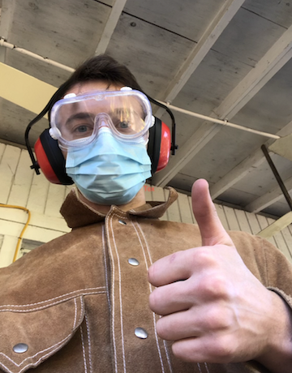

Hello there. This will teach you one of my favorite activities: Forging! It will teach you how you can forge a sword from just a big hunk of metal!
These are a few of the steps:
- You need to get the materials listed below:
- A forge
- A pair of blacksmith tongs
- A nice regular piece of steel
- A hammer of some sort
- An anvil
- A steel brush for slag
- Gloves (preferably wielding gloves)
- a large bucket of oil (peanut oil is the best)
- An oven
- Bench grinder or belt grinder
- Files - lots of them
- Sandpaper (from 120 to 3000)
- Materials for a handle
- Snacks. Lots and lots of them.
- Start the forge in a safe place away from flammable things or little kids
- Wait until the forge is quite hot. (Over 2000 degrees F)
- Put your metal in with a way to get it back out
- Once the metal is glowing yellow, take it out and hit it very hard until it is cold.
- Repeat until you have a sword
- Eat snacks. Yum Yum.
- Use the grinder to grind down big blemishs in the blade
- Use the files and sand paper for about 30 hours to get the finer spots, and until the whole thing has a mirror finish
- Heat up sword once more, and dunk in peanut oil to cool down as fast as possible. (wear gloves and eye protection if you like skin on those places and eyebrows)
- Normalize the steel by putting it into the oven for an hour at 500 degrees fahrenheit
- spend another 20 hours making the sword perfect
- put on the handle
- Easy Peasy
- Enjoy sword and give it to your mom to cut fruits with
It's really not very complicated. Just take 2 weeks of your life to do it and it will be so worth it.
This is an activity I would to suggest for everybody. It's so satisfying to get dozens of burns, blisters, and cuts. What more can I say?
Here are some pictures of my experience with forging.

Here is a link to a very rudimentary blacksmithing instructional video if you would like to learn more!
And here is a very informative tableau about obesity. This is a very alarming problem nationwide that us Americans face. It is very sad to see the decline in the health of the members of our country.

Go to Top